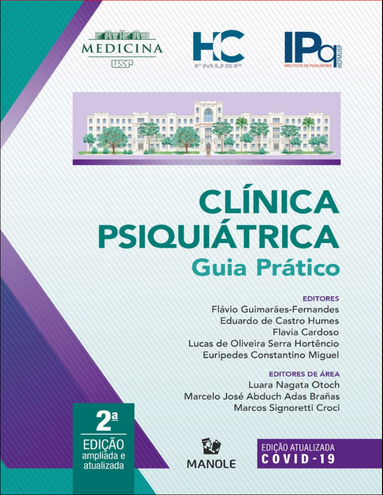
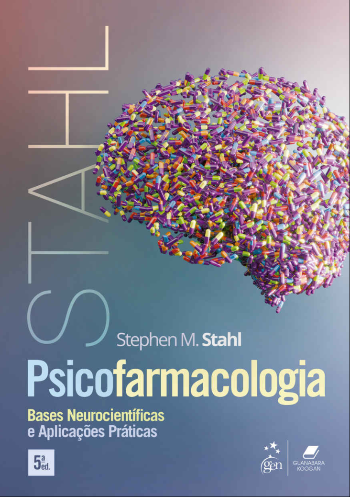
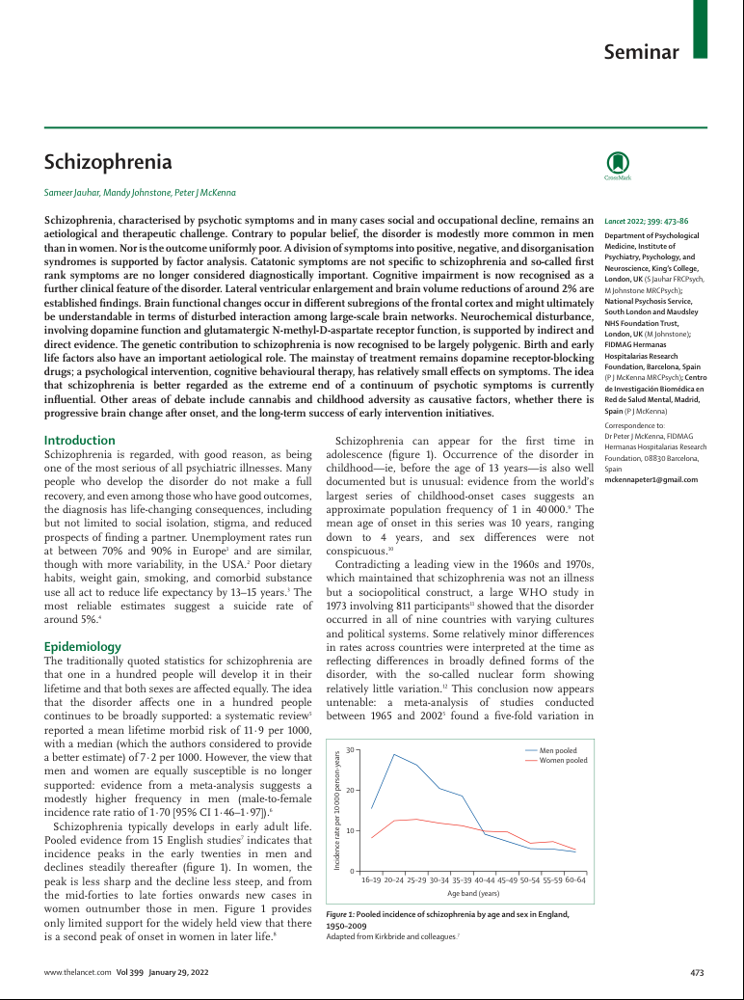
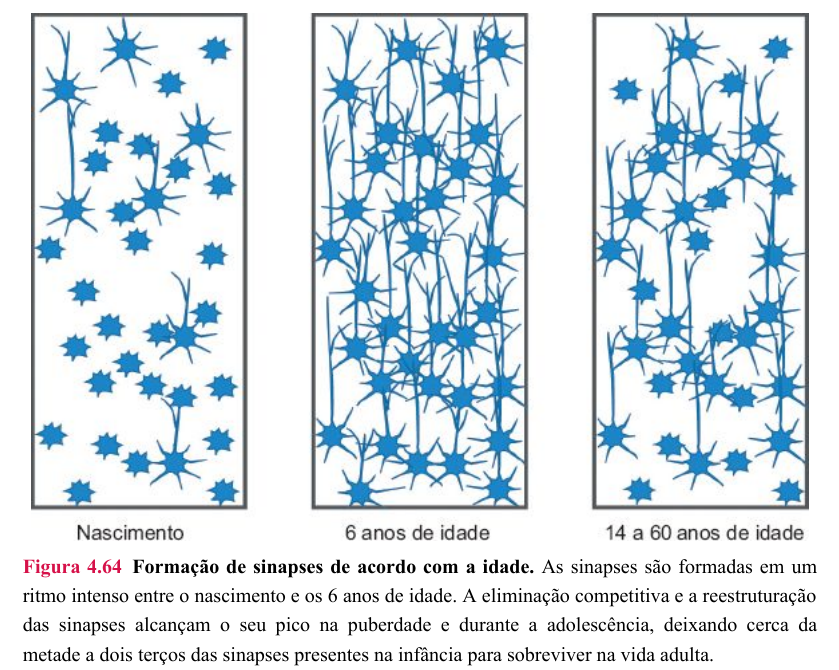
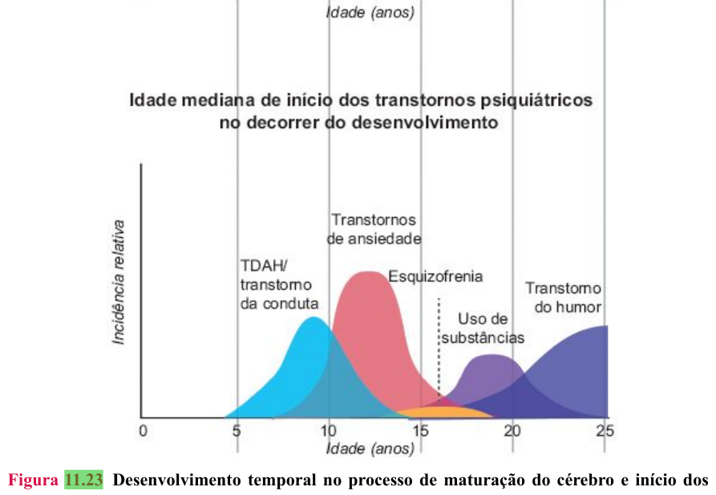
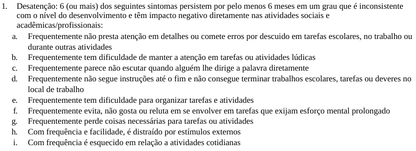
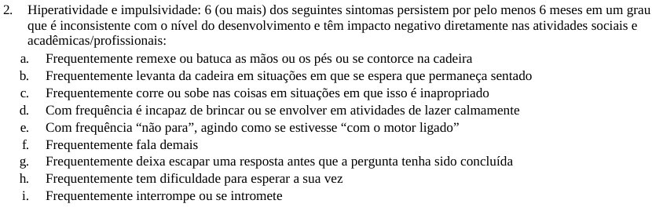
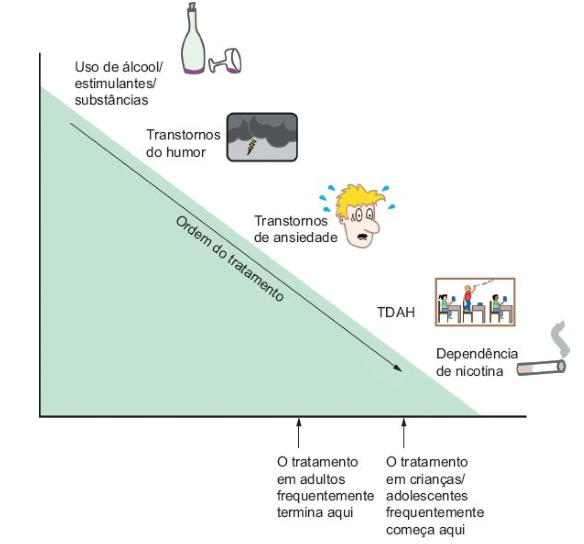
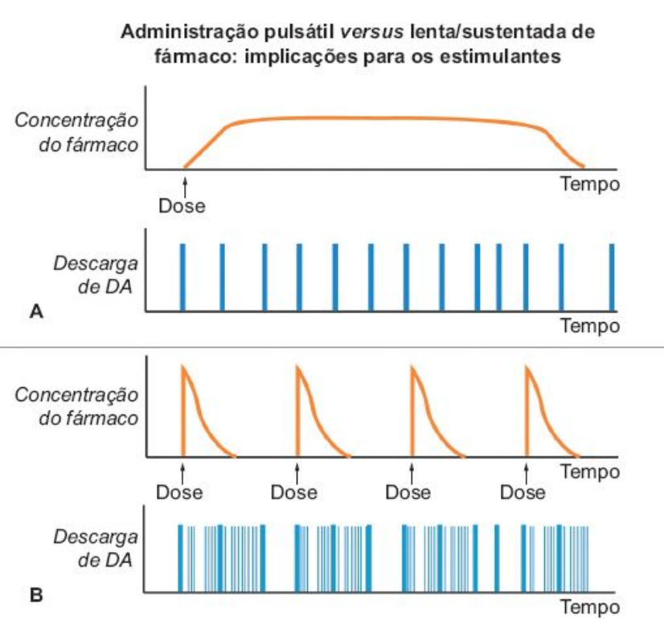

Transtorno de Déficit de Atenção e Hiperatividade
da série: Transtornos do Desenvolvimento
Bruno Vinícius Fauth
02/12/2025
Prefácio
Referências

Referências

Referências

Introdução
Definição
Transtorno do neuro desenvolvimento com padrão persistente de:
dificuldades em manter a atenção;
hiperatividade;
e impulsividade.
Epidemiologia
- Prevalência mundial é de:
- 5% em menores de 18 anos;
- e de 2.5% em nos demais indivíduos
- (então metade simplesmente se cura???)
- É 2-4x mais comum em meninos do que meninas
Fatores de Risco
Genéticos
- Vários polimorfismos contribuem um pouquinho, mas, individualmente,
não causam a doença.
- Exemplo: polimorfismos no gene que codifica o transportador de recaptação de dopamina (famoso “DAT”).
- Tem 76% de herdabilidade (“dos mais altos na psiquiatria”)
Fatores de Risco
Interações Gene-ambiente
Indivíduos com alguns polimorfismos do DAT que tiveram exposição intrauterina a nicotina ou a álcool tem risco ainda maior.
Fatores de Risco
Ambientais
- Associação bem estabelecida com prematuridade, baixo peso ao nascer,
tabagismo e estresse materno durante a gestação.
- não se sabe se é causa ou só correlação
- Incertos: exposição intrauterina a álcool, drogas; exposição a pesticidas e poluentes; dietas; fatores familiares psicossociais
Patogênese
Neurodesenvolvimento Normal
Processos-chave
Neurogênese
Sinaptogênese
Eliminação competitiva das sinapses (poda)
Neurodesenvolvimento Normal
Neurogênese
Formação de novos neurônios
Ocorre principalmente antes do nascimento
Neurodesenvolvimento Normal
Sinaptogênese
- Formação de conexões entre os neurônios
- crescimento dos axônios
- arborização dos dendritos
- “O grosso” desse processo acontece do nascimento até os 6 anos
- ocorre em menor grau durante a vida adulta também
- Envolvida com neuroplasticidade, capacidade de aprendizado
Neurodesenvolvimento Normal
Eliminação Competitiva das Sinapses (poda)
- Mecanismo de eliminação das sinapses
- “só as mais fortes sobrevivem” (mais usadas/reforçadas)
- Otimiza o gastos de recursos/nutrientes
- “para quê gastar ATP com sinapse que não está sendo usada?”
Neurodesenvolvimento Normal
Eliminação Competitiva das Sinapses (poda)
- Ela acontece em velocidades diferentes em áreas
diferentes do cérebro
- algumas maturam mais cedo e outras mais tarde
- Ocorre mais intensamente dos 6 aos 16 anos
- na adolescência, cerca de 50% das sinapses formadas na infância são perdidas
Neurodesenvolvimento Normal

Neurodesenvolvimento Normal
Eliminação Competitiva das Sinapses (poda)
Se sinapses críticas não forem adequadamente reforçadas antes da poda, serão perdidas; e o paciente terá repercussões clínicas.
Incidência de Transtornos vs. Idade

Neurodesenvolvimento no TDAH
De maneira neurobiológica: o TDAH é um atraso da maturação de circuitos do córtex prefrontal (CPF) que, antes dos 12 anos, já causa sintomas.
esses pacientes atingem o pico de espessura cortical só aos 10 anos (em vez de aos 7 anos)
CPF imaturo acarreta: prejuízo à função executiva (resolver problemas, realizar tarefas), controle da atenção e planejamento motor
Neurodesenvolvimento no TDAH
De maneira farmacodinâmica: esse atraso se traduz em tônus reduzido de dopamina (DA) e de noradrenalina (NA) nesses circuitos do CPF.
Neurodesenvolvimento no TDAH
Os pacientes que “se curam” ao decorrer da infância e da adolescência são aqueles que conseguiram desenvolver e fortificar novas sinapses compensatórias antes do fim da poda.
Apresentação Clínica
Visão Geral
- Agrupam-se os sintomas em três™ domínios:
- desatenção, hiperatividade e impulsividade
- As manifestações, dentro de cada um dos domínios, varia conforme a
faixa etária do paciente
- a QP também varia conforme a faixa etária: “motor ligado” na infância; depressão ou uso de substâncias na adolescência
Domínios Sintomáticos
Desatenção
Pré-escolar: brinca por 5 minutos com cada brinquedo e troca, não acaba as atividades (exemplo: pintar desenhos)
Escolar: distraído; esquecido; na aula, ele fica “no mundo da lua”
Adolescente: não persiste/acaba as tarefas acadêmicas, não presta atenção nos detalhes
Adulto: desorganizado, não planeja atividades, perde prazos
Domínios Sintomáticos
Hiperatividade
Pré-escolar: corre de um lado para outro, sobe nos móveis, não para
Escolar: agitado, não consegue ficar sentado na cadeira na aula
Adolescente: inquieto, mexe os pés e as mãos
Adulto: até fica parado, mas não é confortável e você tem a impressão, falando com ele, de que ele já está planejando como sair dali
Domínios Sintomáticos
Impulsividade
Pré-escolar: se machuca (acidentes), pode brigar com os colegas
Escolar: interrompe a fala e a vez dos amigos, não respeita regras
Adolescente: faz coisas arriscadas sem pensar, bebe, sai à noite, exposição desnecessária
Adulto: compra uma moto
Domínios Sintomáticos
Impulsividade
- Em adultos: impaciência, acidentes automobilísticos, decisões
precipitadas
- Desfecho: têm até o dobro do risco de morrer precocemente, principalmente em função de causas externas
Fatores Confundidores
A magnitude dos sintomas é influenciada por:
ambiente;
grau de motivação;
e idade do paciente
Fatores Confundidores
- Ambientes com contenção externa (regras) reduzem os sintomas.
- Em contrapartida, ambientes pouco que fornecem pouca contenção externa podem fomentar comportamentos que simulam TDAH
- Tarefas divertidas e engajantes, com gratificação rápida, favorecem a sustentação da atenção
Fatores Confundidores
Por isso, para ser TDAH, os sintomas precisam estar presentes em pelo menos dois ambientes diferentes (casa e escola, ou casa e trabalho…)
Diagnóstico
Critérios adaptado do DSM-5
A: pelo menos seis sintomas de desatenção ou 6 sintomas de hiperatividade/impulsividade, persistindo por pelo menos seis meses e trazendo algum prejuízo (social, acadêmico, profissional).
B: Vários desses sintomas começam antes dos 12 anos
Critérios adaptado do DSM-5
C: Sintomas acontecem em pelo menos 2 ambientes diferentes
D: Evidências claras de que os sintomas interferem no funcionamento social, acadêmico ou profissional, ou de que reduzem sua qualidade
E: Os sintomas não ocorrem somente na vigência de um episódio psicótico e não são mais bem explicados por outros transtornos mentais
Critério A.1 (domínio desatenção)
Critério A.2 (domínios hiperatividade/impulsividade)
Escalas de Triagem (facilitam aplicação do critério A)
SNAP-IV (6-18 anos)
ASRS-18 (>18 anos)

Diagnóstico Diferencial
Transtorno Opositor-desafiante
Ambos não realizam as tarefas da escola, mas..
- no TDAH, é porque a criança não consegue parar ou prestar atenção
- e, no TOD, é porque ela é teimosa, opositora e desafiante.
Déficit intelectual
Ambos podem não acompanhar o ritmo da aula e, nos primeiros anos escolares, pode ser difícil diferenciar um do outro, porque:
- a desatenção do TDAH simula a baixa função cognitiva
- o “não entender que precisa ficar quieto” do DI pode simular hiperatividade.
Avaliar história obstétrica, atrasos de marcos do neurodesenvolvimento, história familiar e, quando for esperado que a criança já tenha alguma capacidade cognitiva, testes cognitivos (teste WISP).
Transtorno do Espectro Autista
Ambos podem ter prejuízo social e rejeição pelos colegas, mas…
no TDAH é porque a criança é o Taz (hiperativa e impulsiva)
e no TEA é porque a criança é indiferente aos colegas
Epilepsia (crises de ausência)
Ambos podem breves períodos de hiporresponsividade ao ambiente, mas…
no TDAH a criança só está com o “pensamento longe” (chama e ele volta)
na ausência, pode haver estereotipias motoras e não há qualquer responsividade durante as crises
Transtornos de Ansiedade
Ruminações ansiosas/preocupações podem acarretar desatenção; e o estado de hiperexcitabilidade pode simular a impulsividade do TDAH.
Transtornos Comórbidos
50% das crianças com TDAH têm TOD
30% têm algum transtorno de ansiedade
10-20% têm depressão
Tratamento
Visão Geral
O tratamento multimodal é preconizado e, em casos leves, pode-se tentar terapia comportamental de maneira isolada.
Sempre que possível, usar terapia comportamental.
- inclui medidas para os pais e para os professores
Visão Geral
- Psicofármacos também estão indicados, sendo a primeira linha os
psicoestimulantes.
- TU QUER DAR ESTIMULANTE PARA O TAZ???
- História muito longa, mas o objetivo é compensar a falta de DA e NA no CPF, que decorreu do atraso da maturação lá no neurodesenvolvimento.
- TU QUER DAR ESTIMULANTE PARA O TAZ???
- Pacientes adultos, já tiveram tempo para desenvolver outros transtornos que simulam o TDAH; e se você tratar esses outros transtornos como TDAH, o quadro vai piorar
Sequência de Investigação e Manejo

Estimulantes
Visão Geral
- Metilfenidato e Lisdexanfetamina
- Lisdexanfetamina tem um dos maiores tamanhos de efeito da psiquiatria
- Lisdexanfetamina é a primeira escolha para adultos (controverso em crianças)
- Várias apresentações com tempo de duração diferente
- Liberação imediata, Ritalina LA, OROS (Consiv e Concerta)
- Início de efeito instantâneo, wear-off BEM pronunciado
Estimulantes

Estimulantes
Efeitos Colaterais
Insônia → considerar troca de apresentação
Inibição do apetite
Efeitos simpaticomiméticos em cardiopatas
- avaliar o risco CV antes de prescrever e considerar co-manejo com cardiologista
Estimulantes
Efeitos Colaterais
Abuso → contraindicado para paciente com transtorno por uso de substância
Virada maníaca → obrigatório avaliar o risco de TAB antes
Redução da altura final?
- férias terapêuticas?
Não-estimulantes
Em caso de contraindicação ou intolerância aos estimulantes
Atomoxetina (ISRN):
- bastante eficaz, pouco colateral, tamanho de efeito menor
- demora para fazer efeito, mas tem sustentada (similar aos antidepressivos)
Outros: tricíclicos mais noradrenérgicos (desipramina, nortriptilina), Bupropiona (IRND), Clonidina
Prognóstico
15% dos TDAH permanecem de maneira plena na vida adulta
65% ainda apresenta sintomas residuais
Desfechos:
- 2x risco de porte precoce, geralmente por causas externas
- prejuízo nas relações interpessoais
- pior colocação no mercado de trabalho
- maior incidência de gestações na adolescência
Pontos-chave
TDAH tem que começar antes dos 12 anos
TDAH não tratado aumenta a mortalidade
No manejo de adultos, excluir/manejar comorbidades antes
Não dar Venvanse sem excluir TUS e risco de TAB antes!!!!!!!!!